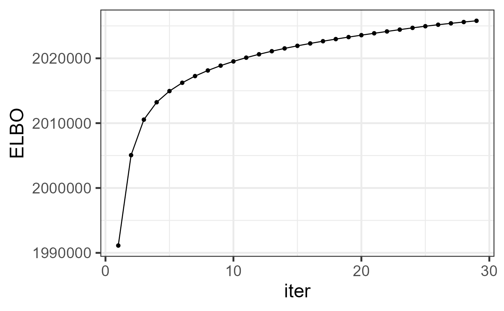
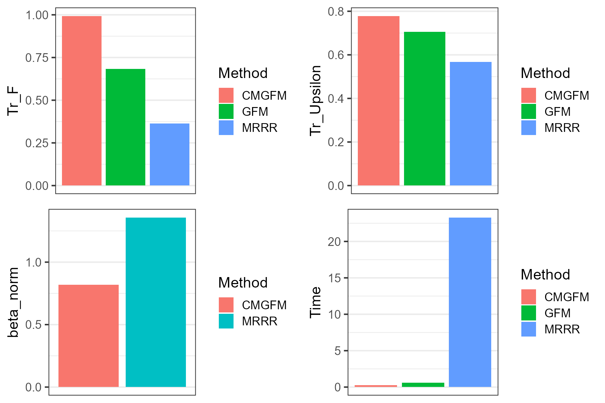

This vignette introduces the usage of CMGFM for the analysis of high-dimensional multimodality data with additional covariates, by comparison with other methods.
The package can be loaded with the command:
library(CMGFM)
#> Loading required package: irlba
#> Loading required package: Matrix
#> CMGFM : Covariate-augumented generalized factor model is designed to account for cross-modal heterogeneity, capture nonlinear dependencies among the data, incorporate additional information, and provide excellent interpretability while maintaining high computational efficiency.First, we generate the data simulated data.
pveclist <- list('gaussian'=c(50, 150),'poisson'=c(50, 150),
'binomial'=c(100,60))
q <- 6
sigmavec <- rep(1,3)
pvec <- unlist(pveclist)
methodNames <- c("CMGFM", "GFM", "MRRR", "LFR" , "GPCA", "COAP")
datlist <- gendata_cmgfm(pveclist = pveclist, seed = 1, n = 300,d = 3,
q = q, rho = rep(1,length(pveclist)), rho_z=0.2,
sigmavec=sigmavec, sigma_eps=1)
str(datlist)
#> List of 12
#> $ XList :List of 3
#> ..$ : num [1:300, 1:200] -0.412 3.69 -1.696 -1.371 2.124 ...
#> .. ..- attr(*, "dimnames")=List of 2
#> .. .. ..$ : NULL
#> .. .. ..$ : NULL
#> ..$ : int [1:300, 1:200] 0 5 0 0 7 1 0 0 0 1 ...
#> ..$ : int [1:300, 1:160] 0 0 1 0 0 1 1 1 1 0 ...
#> $ Z : num [1:300, 1:3] 0.315 0.113 0.263 -0.259 -0.07 ...
#> $ types : chr [1:3] "gaussian" "poisson" "binomial"
#> $ Alist :List of 1
#> ..$ : num [1:300, 1:6] 0 0 0 0 0 0 0 0 0 0 ...
#> $ numvarmat: num [1:3, 1:2] 50 50 100 150 150 60
#> ..- attr(*, "dimnames")=List of 2
#> .. ..$ : chr [1:3] "gaussian" "poisson" "binomial"
#> .. ..$ : NULL
#> $ B0List :List of 3
#> ..$ :List of 2
#> .. ..$ : num [1:50, 1:6] 0.2622 -0.6594 -0.0584 0.0826 -0.3536 ...
#> .. ..$ : num [1:150, 1:6] 0.0729 -0.1236 -0.1994 0.7284 0.5208 ...
#> ..$ :List of 2
#> .. ..$ : num [1:50, 1:6] 0.322 -0.0678 0.0515 -0.1115 0.1911 ...
#> .. ..$ : num [1:150, 1:6] 0.3414 -0.1357 -0.2816 -0.1411 0.0463 ...
#> ..$ :List of 2
#> .. ..$ : num [1:100, 1:6] 0.0114 -0.4359 0.1958 -0.3451 0.0457 ...
#> .. ..$ : num [1:60, 1:6] 0.7305 -0.0567 0.2556 0.1347 0.3636 ...
#> $ mu0List :List of 3
#> ..$ : num [1:200] 0.195 0.295 0.23 -0.122 0.605 ...
#> ..$ : num [1:200] -0.46 0.108 -0.177 -0.211 -0.469 ...
#> ..$ : num [1:160] -0.159 -0.312 0.214 0.46 -0.783 ...
#> $ beta0List:List of 3
#> ..$ : num [1:3, 1:2] -1.253 0.367 -1.671 3.191 0.659 ...
#> ..$ : num [1:3, 1:2] 0.683 0.827 0.244 -3.179 -1.575 ...
#> ..$ : num [1:3, 1:2] 3.0383 1.9234 -2.2854 -0.7993 0.0781 ...
#> $ Uplist :List of 3
#> ..$ :List of 2
#> .. ..$ : num [1:50, 1:7] 0.195 0.295 0.23 -0.122 0.605 ...
#> .. ..$ : num [1:150, 1:7] -0.147 -0.418 0.228 -0.054 0.961 ...
#> ..$ :List of 2
#> .. ..$ : num [1:50, 1:7] -0.46 0.108 -0.177 -0.211 -0.469 ...
#> .. ..$ : num [1:150, 1:7] 0.1795 0.0427 0.1158 0.3639 0.1529 ...
#> ..$ :List of 2
#> .. ..$ : num [1:100, 1:7] -0.159 -0.312 0.214 0.46 -0.783 ...
#> .. ..$ : num [1:60, 1:7] 0.0809 -0.5117 -0.6635 -0.0317 -0.6377 ...
#> $ U0List :List of 3
#> ..$ : num [1:300, 1:2] -0.626 0.184 -0.836 1.595 0.33 ...
#> ..$ : num [1:300, 1:2] -0.626 0.184 -0.836 1.595 0.33 ...
#> ..$ : num [1:300, 1:2] -0.626 0.184 -0.836 1.595 0.33 ...
#> $ F0 : num [1:300, 1:6] -0.626 0.184 -0.836 1.595 0.33 ...
#> $ sigma_eps: num 1
XList <- datlist$XList
Z <- datlist$Z
numvarmat <- datlist$numvarmat
Uplist <- list()
k <- 1
for(id in 1:length(datlist$Uplist)){
for(im in 1:length(datlist$Uplist[[id]])){
Uplist[[k]] <- datlist$Uplist[[id]][[im]]
k <- k + 1
}
}
types <- datlist$typesFit the CMGFM model using the function CMGFM() in the R
package CMGFM. Users can use ?CMGFM to see the
details about this function
system.time({
tic <- proc.time()
rlist <- CMGFM(XList, Z, types=types, q=q, numvarmat=numvarmat)
toc <- proc.time()
time_smgfm <- toc[3] - tic[3]
})
#> iter = 2, ELBO= 1991125.056475, dELBO=1.000000
#> iter = 3, ELBO= 2005063.871790, dELBO=0.007000
#> iter = 4, ELBO= 2010542.767770, dELBO=0.002733
#> iter = 5, ELBO= 2013223.740359, dELBO=0.001333
#> iter = 6, ELBO= 2014945.775650, dELBO=0.000855
#> iter = 7, ELBO= 2016228.099702, dELBO=0.000636
#> iter = 8, ELBO= 2017258.673090, dELBO=0.000511
#> iter = 9, ELBO= 2018123.186985, dELBO=0.000429
#> iter = 10, ELBO= 2018867.740559, dELBO=0.000369
#> iter = 11, ELBO= 2019520.570983, dELBO=0.000323
#> iter = 12, ELBO= 2020100.677428, dELBO=0.000287
#> iter = 13, ELBO= 2020621.729760, dELBO=0.000258
#> iter = 14, ELBO= 2021094.053165, dELBO=0.000234
#> iter = 15, ELBO= 2021525.743440, dELBO=0.000214
#> iter = 16, ELBO= 2021923.351548, dELBO=0.000197
#> iter = 17, ELBO= 2022292.338348, dELBO=0.000182
#> iter = 18, ELBO= 2022637.400259, dELBO=0.000171
#> iter = 19, ELBO= 2022962.720218, dELBO=0.000161
#> iter = 20, ELBO= 2023272.171344, dELBO=0.000153
#> iter = 21, ELBO= 2023569.470842, dELBO=0.000147
#> iter = 22, ELBO= 2023858.213468, dELBO=0.000143
#> iter = 23, ELBO= 2024141.525295, dELBO=0.000140
#> iter = 24, ELBO= 2024420.678070, dELBO=0.000138
#> iter = 25, ELBO= 2024692.109344, dELBO=0.000134
#> iter = 26, ELBO= 2024946.637220, dELBO=0.000126
#> iter = 27, ELBO= 2025178.764916, dELBO=0.000115
#> iter = 28, ELBO= 2025392.822741, dELBO=0.000106
#> iter = 29, ELBO= 2025594.259740, dELBO=0.000099
#> iter = 30, ELBO= 2025785.510378, dELBO=0.000094
#> user system elapsed
#> 0.03 0.00 0.28Check the increased property of the evidence lower bound function.
library(ggplot2)
dat_iter <- data.frame(iter=1:length(rlist$ELBO_seq), ELBO=rlist$ELBO_seq)
ggplot(data=dat_iter, aes(x=iter, y=ELBO)) + geom_line() + geom_point() + theme_bw(base_size = 20)
We calculate the metrics to measure the estimation accuracy, where
the trace statistic is used to measure the estimation accuracy of
loading matrix and prediction accuracy of factor matrix, which is
evaluated by the function measurefun() in the R package
GFM, and the root of mean square error is adopted to
measure the estimation error of bbeta.
library(GFM)
#> Loading required package: doSNOW
#> Loading required package: foreach
#> Loading required package: iterators
#> Loading required package: snow
#> Loading required package: parallel
#>
#> Attaching package: 'parallel'
#> The following objects are masked from 'package:snow':
#>
#> closeNode, clusterApply, clusterApplyLB, clusterCall, clusterEvalQ,
#> clusterExport, clusterMap, clusterSplit, makeCluster, parApply,
#> parCapply, parLapply, parRapply, parSapply, recvData, recvOneData,
#> sendData, splitIndices, stopCluster
#> GFM : Generalized factor model is implemented for ultra-high dimensional data with mixed-type variables.
#> Two algorithms, variational EM and alternate maximization, are designed to implement the generalized factor model,
#> respectively. The factor matrix and loading matrix together with the number of factors can be well estimated.
#> This model can be employed in social and behavioral sciences, economy and finance, and genomics,
#> to extract interpretable nonlinear factors. More details can be referred to
#> Wei Liu, Huazhen Lin, Shurong Zheng and Jin Liu. (2021) <doi:10.1080/01621459.2021.1999818>. Check out our Package website (https://feiyoung.github.io/GFM/docs/index.html) for a more complete description of the methods and analyses
hUplist <- lapply(seq_along(rlist$Bf), function(m) cbind(rlist$muf[[m]], rlist$Bf[[m]]))
metricList <- list()
metricList$CMGFM <- list()
meanTr <- function(hBlist, Blist, type='trace_statistic'){
###It is noted that the trace statistics is not symmetric, the true value must be in last
trvec <- sapply(1:length(Blist), function(j) measurefun(hBlist[[j]], Blist[[j]], type = type))
return(mean(trvec))
}
normvec <- function(x) sqrt(sum(x^2/ length(x)))
metricList$CMGFM$Tr_F <- measurefun(rlist$M, datlist$F0)
metricList$CMGFM$Tr_Upsilon <- meanTr(hUplist, Uplist)
metricList$CMGFM$Tr_U <- measurefun(Reduce(cbind,rlist$Xif), Reduce(cbind, datlist$U0))
metricList$CMGFM$beta_norm <- normvec(as.vector(Reduce(cbind,rlist$betaf)- Reduce(cbind,datlist$beta0List)))
metricList$CMGFM$Time <- rlist$time_useWe compare CMGFM with various prominent methods in the literature. They are (1) High-dimensional LFM (Bai and Ng 2002) implemented in the R package GFM; (2) PoissonPCA (Kenney et al. 2021) implemented in the R package PoissonPCA; (3) Zero-inflated Poisson factor model (ZIPFA, Xu et al. 2021) implemented in the R package ZIPFA; (4) Generalized factor model (Liu et al. 2023) implemented in the R package GFM; (5) PLNPCA (Chiquet et al. 2018) implemented in the R package PLNmodels; (6) Generalized Linear Latent Variable Models (GLLVM, Hui et al. 2017) implemented in the R package gllvm. (7) Poisson regression model for each \(x_{ij}, (j = 1,··· ,p)\), implemented in stats R package; (8) Multi-response reduced-rank Poisson regression model (MMMR, Luo et al. 2018) implemented in rrpack R package.
(1). First, we implemented the generalized factor model (LFM) and record the metrics that measure the estimation accuracy and computational cost.
metricList$GFM <- list()
tic <- proc.time()
res_gfm <- gfm(XList, types=types, q=q)
#> Starting the two-step method with varitional EM in the first step...
#> iter = 2, ELBO= 2697769.202257, dELBO=1.000000
#> iter = 3, ELBO= 2702423.237715, dELBO=0.001725
#> iter = 4, ELBO= 2704625.687731, dELBO=0.000815
#> iter = 5, ELBO= 2705737.853138, dELBO=0.000411
#> iter = 6, ELBO= 2706272.269271, dELBO=0.000198
#> iter = 7, ELBO= 2706482.230846, dELBO=0.000078
#> Finish the two-step method
toc <- proc.time()
time_gfm <- toc[3] - tic[3]
mat2list <- function(B, pvec, by_row=TRUE){
Blist <- list()
pcum = c(0, cumsum(pvec))
for(i in 1:length(pvec)){
if(by_row){
Blist[[i]] <- B[(pcum[i]+1):pcum[i+1],]
}else{
Blist[[i]] <- B[, (pcum[i]+1):pcum[i+1]]
}
}
return(Blist)
}
metricList$GFM$Tr_F <- measurefun(res_gfm$hH, datlist$F0)
metricList$GFM$Tr_Upsilon <- meanTr(mat2list(cbind(res_gfm$hmu,res_gfm$hB), pvec), Uplist)
metricList$GFM$Tr_U <- NA
metricList$GFM$beta_norm <- NA
metricList$GFM$Time <- time_gfm
mrrr_run <- function(Y, Z, numvarmat, rank0,family=list(poisson()),
familygroup, epsilon = 1e-4, sv.tol = 1e-2,
lambdaSVD=0.1, maxIter = 2000, trace=TRUE, trunc=500){
# epsilon = 1e-4; sv.tol = 1e-2; maxIter = 30; trace=TRUE,lambdaSVD=0.1
Diag <- function(vec){
q <- length(vec)
if(q > 1){
y <- diag(vec)
}else{
y <- matrix(vec, 1,1)
}
return(y)
}
require(rrpack)
q <- rank0
n <- nrow(Y); p <- ncol(Y)
X <- cbind(cbind(1, Z), diag(n))
d <- ncol(Z)
## Trunction
Y[Y>trunc] <- trunc
Y[Y< -trunc] <- -trunc
tic <- proc.time()
pvec <- as.vector(t(numvarmat))
pvec <- pvec[pvec>0]
pcums <- cumsum(pvec)
idxlist <- list()
idxlist[[1]] <- 1:pcums[1]
if(length(pvec)>1){
for(i in 2:length(pvec)){
idxlist[[i]] <- (pcums[i-1]+1):pcums[i]
}
}
svdX0d1 <- svd(X)$d[1]
init1 = list(kappaC0 = svdX0d1 * 5)
offset = NULL
control = list(epsilon = epsilon, sv.tol = sv.tol, maxit = maxIter,
trace = trace, gammaC0 = 1.1, plot.cv = TRUE,
conv.obj = TRUE)
res_mrrr <- mrrr(Y=Y, X=X[,-1], family = family, familygroup = familygroup,
penstr = list(penaltySVD = "rankCon", lambdaSVD = lambdaSVD),
control = control, init = init1, maxrank = rank0+d) #
hmu <- res_mrrr$coef[1,]
hbeta <- t(res_mrrr$coef[2:(d+1),])
hTheta <- res_mrrr$coef[-c(1:(d+1)),]
hbeta_rf <- NULL
for(i in seq_along(pvec)){
hbeta_rf <- cbind(hbeta_rf, colMeans(hbeta[idxlist[[i]],]))
}
# Matrix::rankMatrix(hTheta)
svd_Theta <- svd(hTheta, nu=q, nv=q)
hH <- svd_Theta$u
hB <- svd_Theta$v %*% Diag(svd_Theta$d[1:q])
toc <- proc.time()
time_mrrr <- toc[3] - tic[3]
return(list(hH=hH, hB=hB, hmu= hmu, beta=hbeta_rf, time_use=time_mrrr))
}
family_use <- list(gaussian(), poisson(), binomial())
familygroup <- sapply(seq_along(datlist$XList), function(j) rep(j, ncol(datlist$XList[[j]])))
res_mrrr <- mrrr_run(Reduce(cbind, datlist$XList), Z = Z, numvarmat, rank0=q, family=family_use,
familygroup = unlist(familygroup), maxIter=100) #
#> Loading required package: rrpack
#> iter = 1 obj/Cnorm_diff = 2285754
#> iter = 2 obj/Cnorm_diff = 1895923
#> iter = 3 obj/Cnorm_diff = 1602853
#> iter = 4 obj/Cnorm_diff = 1327399
#> iter = 5 obj/Cnorm_diff = 1131392
#> iter = 6 obj/Cnorm_diff = 1013997
#> iter = 7 obj/Cnorm_diff = 938923.5
#> iter = 8 obj/Cnorm_diff = 880858.6
#> iter = 9 obj/Cnorm_diff = 831925.5
#> iter = 10 obj/Cnorm_diff = 788683.1
#> iter = 11 obj/Cnorm_diff = 755306
#> iter = 11 obj/Cnorm_diff = 755306
#> iter = 12 obj/Cnorm_diff = 731040.1
#> iter = 13 obj/Cnorm_diff = 720962.6
#> iter = 14 obj/Cnorm_diff = 714250.6
#> iter = 15 obj/Cnorm_diff = 708120.1
#> iter = 16 obj/Cnorm_diff = 701718.5
#> iter = 17 obj/Cnorm_diff = 694597.2
#> iter = 18 obj/Cnorm_diff = 687113.1
#> iter = 19 obj/Cnorm_diff = 678866.8
#> iter = 20 obj/Cnorm_diff = 670110.7
#> iter = 21 obj/Cnorm_diff = 660703.3
#> iter = 22 obj/Cnorm_diff = 650862.2
#> iter = 23 obj/Cnorm_diff = 640609.7
#> iter = 23 obj/Cnorm_diff = 640609.7
#> iter = 24 obj/Cnorm_diff = 634136.5
#> iter = 25 obj/Cnorm_diff = 630295.3
#> iter = 26 obj/Cnorm_diff = 628296.4
#> iter = 27 obj/Cnorm_diff = 626027.9
#> iter = 28 obj/Cnorm_diff = 623654.6
#> iter = 29 obj/Cnorm_diff = 620954.6
#> iter = 30 obj/Cnorm_diff = 618049.5
#> iter = 31 obj/Cnorm_diff = 614697.6
#> iter = 32 obj/Cnorm_diff = 610953.2
#> iter = 33 obj/Cnorm_diff = 606644
#> iter = 34 obj/Cnorm_diff = 601733.5
#> iter = 34 obj/Cnorm_diff = 601733.5
#> iter = 35 obj/Cnorm_diff = 596206.5
#> iter = 36 obj/Cnorm_diff = 595329.2
#> iter = 37 obj/Cnorm_diff = 594390.1
#> iter = 38 obj/Cnorm_diff = 593270.4
#> iter = 39 obj/Cnorm_diff = 591937.5
#> iter = 40 obj/Cnorm_diff = 590355.4
#> iter = 41 obj/Cnorm_diff = 588483.5
#> iter = 42 obj/Cnorm_diff = 586277.2
#> iter = 43 obj/Cnorm_diff = 583688
#> iter = 44 obj/Cnorm_diff = 580665.3
#> iter = 45 obj/Cnorm_diff = 577158.2
#> iter = 46 obj/Cnorm_diff = 573119.8
#> iter = 47 obj/Cnorm_diff = 568520.9
#> iter = 47 obj/Cnorm_diff = 568520.9
#> iter = 48 obj/Cnorm_diff = 563522.6
#> iter = 49 obj/Cnorm_diff = 562940.9
#> iter = 50 obj/Cnorm_diff = 562299.2
#> iter = 51 obj/Cnorm_diff = 561541.1
#> iter = 52 obj/Cnorm_diff = 560644.4
#> iter = 53 obj/Cnorm_diff = 559586.9
#> iter = 54 obj/Cnorm_diff = 558340.3
#> iter = 55 obj/Cnorm_diff = 556872.3
#> iter = 56 obj/Cnorm_diff = 555143.8
#> iter = 57 obj/Cnorm_diff = 553109.6
#> iter = 58 obj/Cnorm_diff = 550720.4
#> iter = 59 obj/Cnorm_diff = 547934.6
#> iter = 60 obj/Cnorm_diff = 544813.2
#> iter = 60 obj/Cnorm_diff = 544813.2
#> iter = 61 obj/Cnorm_diff = 543904.5
#> iter = 62 obj/Cnorm_diff = 542573.5
#> iter = 63 obj/Cnorm_diff = 541631.6
#> iter = 64 obj/Cnorm_diff = 540700.3
#> iter = 65 obj/Cnorm_diff = 539689
#> iter = 66 obj/Cnorm_diff = 538625.6
#> iter = 67 obj/Cnorm_diff = 537504.6
#> iter = 68 obj/Cnorm_diff = 536307
#> iter = 69 obj/Cnorm_diff = 534984.4
#> iter = 70 obj/Cnorm_diff = 533467.5
#> iter = 71 obj/Cnorm_diff = 531678.1
#> iter = 72 obj/Cnorm_diff = 529609.3
#> iter = 72 obj/Cnorm_diff = 529609.3
#> iter = 73 obj/Cnorm_diff = 527865.5
#> iter = 74 obj/Cnorm_diff = 527373.4
#> iter = 75 obj/Cnorm_diff = 526906.6
#> iter = 76 obj/Cnorm_diff = 526374.9
#> iter = 77 obj/Cnorm_diff = 525761.6
#> iter = 78 obj/Cnorm_diff = 525061.1
#> iter = 79 obj/Cnorm_diff = 524258.2
#> iter = 80 obj/Cnorm_diff = 523338.7
#> iter = 81 obj/Cnorm_diff = 522276
#> iter = 82 obj/Cnorm_diff = 521034.1
#> iter = 83 obj/Cnorm_diff = 519565
#> iter = 84 obj/Cnorm_diff = 517836.7
#> iter = 85 obj/Cnorm_diff = 516024.2
#> iter = 85 obj/Cnorm_diff = 516024.2
#> iter = 85 obj/Cnorm_diff = 516024.2
#> iter = 85 obj/Cnorm_diff = 516024.2
#> iter = 85 obj/Cnorm_diff = 516024.2
#> iter = 85 obj/Cnorm_diff = 516024.2
#> iter = 85 obj/Cnorm_diff = 516024.2
metricList$MRRR <- list()
metricList$MRRR$Tr_F <- measurefun(res_mrrr$hH, datlist$F0)
metricList$MRRR$Tr_Upsilon <-meanTr(mat2list(cbind(res_mrrr$hmu,res_mrrr$hB), pvec), Uplist)
metricList$MRRR$Tr_U <-NA
metricList$MRRR$beta_norm <- normvec(as.vector(res_mrrr$beta- Reduce(cbind,datlist$beta0List)))
metricList$MRRR$Time <- res_mrrr$time_useNext, we summarized the metrics for COAP and other compared methods in a dataframe object.
list2vec <- function(xlist){
nn <- length(xlist)
me <- rep(NA, nn)
idx_noNA <- which(sapply(xlist, function(x) !is.null(x)))
for(r in idx_noNA) me[r] <- xlist[[r]]
return(me)
}
dat_metric <- data.frame(Tr_F = sapply(metricList, function(x) x$Tr_F),
Tr_Upsilon = sapply(metricList, function(x) x$Tr_Upsilon),
Tr_U = sapply(metricList, function(x) x$Tr_U),
beta_norm =sapply(metricList, function(x) x$beta_norm),
Time = sapply(metricList, function(x) x$Time),
Method = names(metricList))
dat_metric
#> Tr_F Tr_Upsilon Tr_U beta_norm Time Method
#> CMGFM 0.9935940 0.7785991 0.9644858 0.8201792 0.28 CMGFM
#> GFM 0.6829262 0.7051994 NA NA 0.62 GFM
#> MRRR 0.3629987 0.5669866 NA 1.3579832 23.30 MRRRPlot the results for COAP and other methods, which suggests that CMGFM achieves better estimation accuracy for the quantities of interest.
library(cowplot)
p1 <- ggplot(data=subset(dat_metric, !is.na(Tr_F)), aes(x= Method, y=Tr_F, fill=Method)) + geom_bar(stat="identity") + xlab(NULL) + scale_x_discrete(breaks=NULL) + theme_bw(base_size = 16)
p2 <- ggplot(data=subset(dat_metric, !is.na(Tr_Upsilon)), aes(x= Method, y=Tr_Upsilon, fill=Method)) + geom_bar(stat="identity") + xlab(NULL) + scale_x_discrete(breaks=NULL)+ theme_bw(base_size = 16)
p3 <- ggplot(data=subset(dat_metric, !is.na(beta_norm)), aes(x= Method, y=beta_norm, fill=Method)) + geom_bar(stat="identity") + xlab(NULL) + scale_x_discrete(breaks=NULL)+ theme_bw(base_size = 16)
p4 <- ggplot(data=subset(dat_metric, !is.na(Time)), aes(x= Method, y=Time, fill=Method)) + geom_bar(stat="identity") + xlab(NULL) + scale_x_discrete(breaks=NULL)+ theme_bw(base_size = 16)
plot_grid(p1,p2,p3, p4, nrow=2, ncol=2)
We applied the maximum singular value ratio based method to select the number of factors. The results showed that the maximum SVR method has the potential to identify the true values.
hq <- MSVR(XList, Z, types=types, numvarmat, q_max=20)
#> iter = 2, ELBO= 1996035.425921, dELBO=1.000000
#> iter = 3, ELBO= 2008870.623908, dELBO=0.006430
#> iter = 4, ELBO= 2013435.986180, dELBO=0.002273
#> iter = 5, ELBO= 2015986.295861, dELBO=0.001267
#> iter = 6, ELBO= 2017732.453117, dELBO=0.000866
#> iter = 7, ELBO= 2019070.938978, dELBO=0.000663
#> iter = 8, ELBO= 2020159.319418, dELBO=0.000539
#> iter = 9, ELBO= 2021075.256204, dELBO=0.000453
#> iter = 10, ELBO= 2021863.403668, dELBO=0.000390
#> iter = 11, ELBO= 2022552.576503, dELBO=0.000341
#> iter = 12, ELBO= 2023162.855216, dELBO=0.000302
#> iter = 13, ELBO= 2023708.974155, dELBO=0.000270
#> iter = 14, ELBO= 2024202.153249, dELBO=0.000244
#> iter = 15, ELBO= 2024651.196115, dELBO=0.000222
#> iter = 16, ELBO= 2025063.200205, dELBO=0.000203
#> iter = 17, ELBO= 2025444.043705, dELBO=0.000188
#> iter = 18, ELBO= 2025798.738205, dELBO=0.000175
#> iter = 19, ELBO= 2026131.699768, dELBO=0.000164
#> iter = 20, ELBO= 2026446.968622, dELBO=0.000156
#> iter = 21, ELBO= 2026748.383268, dELBO=0.000149
#> iter = 22, ELBO= 2027039.661075, dELBO=0.000144
#> iter = 23, ELBO= 2027324.185988, dELBO=0.000140
#> iter = 24, ELBO= 2027603.938867, dELBO=0.000138
#> iter = 25, ELBO= 2027876.769478, dELBO=0.000135
#> iter = 26, ELBO= 2028134.194499, dELBO=0.000127
#> iter = 27, ELBO= 2028368.473987, dELBO=0.000116
#> iter = 28, ELBO= 2028582.177694, dELBO=0.000105
#> iter = 29, ELBO= 2028781.486569, dELBO=0.000098
#> iter = 30, ELBO= 2028969.592915, dELBO=0.000093
print(c(q_true=q, q_est=hq))
#> q_true q_est
#> 6 6
sessionInfo()
#> R version 4.4.0 (2024-04-24 ucrt)
#> Platform: x86_64-w64-mingw32/x64
#> Running under: Windows 11 x64 (build 22631)
#>
#> Matrix products: default
#>
#>
#> locale:
#> [1] LC_COLLATE=Chinese (Simplified)_China.utf8
#> [2] LC_CTYPE=Chinese (Simplified)_China.utf8
#> [3] LC_MONETARY=Chinese (Simplified)_China.utf8
#> [4] LC_NUMERIC=C
#> [5] LC_TIME=Chinese (Simplified)_China.utf8
#>
#> time zone: Asia/Shanghai
#> tzcode source: internal
#>
#> attached base packages:
#> [1] parallel stats graphics grDevices utils datasets methods
#> [8] base
#>
#> other attached packages:
#> [1] cowplot_1.1.3 rrpack_0.1-13 GFM_1.2.1 doSNOW_1.0.20
#> [5] snow_0.4-4 iterators_1.0.14 foreach_1.5.2 ggplot2_3.5.1
#> [9] CMGFM_1.1 irlba_2.3.5.1 Matrix_1.7-0
#>
#> loaded via a namespace (and not attached):
#> [1] sass_0.4.9 utf8_1.2.4 generics_0.1.3 shape_1.4.6.1
#> [5] lattice_0.22-6 digest_0.6.35 magrittr_2.0.3 evaluate_0.23
#> [9] grid_4.4.0 fastmap_1.1.1 glmnet_4.1-8 jsonlite_1.8.8
#> [13] survival_3.5-8 purrr_1.0.2 fansi_1.0.6 scales_1.3.0
#> [17] codetools_0.2-20 textshaping_0.3.7 jquerylib_0.1.4 cli_3.6.2
#> [21] rlang_1.1.3 splines_4.4.0 munsell_0.5.1 withr_3.0.0
#> [25] cachem_1.0.8 yaml_2.3.8 tools_4.4.0 memoise_2.0.1
#> [29] dplyr_1.1.4 colorspace_2.1-0 vctrs_0.6.5 R6_2.5.1
#> [33] lifecycle_1.0.4 fs_1.6.4 htmlwidgets_1.6.4 MASS_7.3-60.2
#> [37] ragg_1.3.1 pkgconfig_2.0.3 desc_1.4.3 pkgdown_2.0.9
#> [41] bslib_0.7.0 pillar_1.9.0 gtable_0.3.5 glue_1.7.0
#> [45] Rcpp_1.0.12 systemfonts_1.0.6 highr_0.10 tidyselect_1.2.1
#> [49] xfun_0.43 tibble_3.2.1 rstudioapi_0.16.0 knitr_1.46
#> [53] farver_2.1.1 htmltools_0.5.8.1 labeling_0.4.3 rmarkdown_2.26
#> [57] compiler_4.4.0